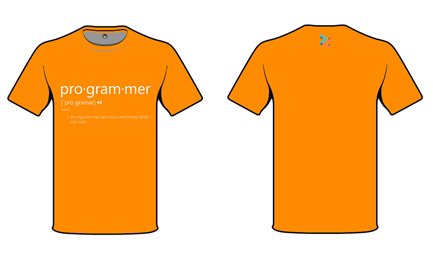

Designs
Shirts
 |
 |
I submitted these designs as entries in a contest for the Programmers, Developers group in Facebook some time in March. Unfortunately I didn't win but that's okay. I entered for the experience like when I volunteered for the Maker Festival Manila in 2014 hosted by Mozilla.
The LogoOn the right is a scanned-copy of the logo when it is being conceived. I don't know where is the hard copy of it - I must've lost it. I don't know when I made it either but checking the exif file of the photo, I last modified it two years ago (April 11, 2014 to be exact). And below are the final versions of the logo. The first one, I use it for beta versions of things I'm working on. The second one, for final or release versions. I get inspiration from Caspar Lee's logo. He's a video blogger (vlogger) based in London but he's really from South Africa. You can follow his channel here. |
||
 |
 |
Why "Doodlr"?
Doodlr is the term I use to call my works. I mean, like a name of the company that my works came from. It's like a personal brand of sorts. I also call my blogs Doodlr.
Doodlr - also because I have this personal rule that my works came from the mind and the first thing I do to take them out is scribble or make a doodle.
Animations
The VSA logo
This thing is really new to me. Here are some of my works anyways.
I am a member of a volunteer organization at our school named the Volunteer Student Assistant. This group is composed of computer engineering students doing voluntary works like repairing personal computers. Yeah I like voluntary works.
Aside from that, we also participate in voluntary activities outside the school - like the event by Mozilla.
We also maintain a computer laboratory in our school, keeping the networks in check and also making sure that every computer is working - ready to be used by a student during class-hour.
You can visit our website (yes, we have a website) here and also like our Facebook Page here.
Battery animation
 |
This is the first animation I made after I attended a seminar about Photoshop last September 2015. |